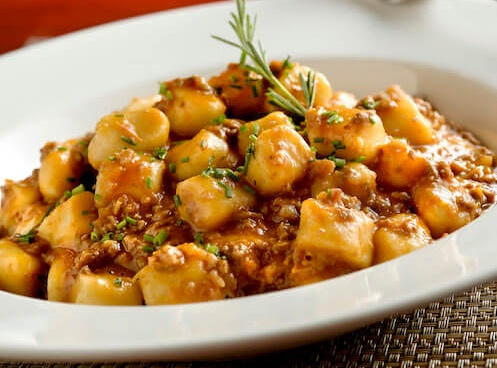
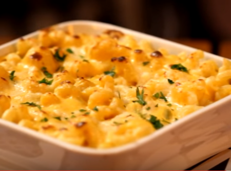

Os melhores do Pedro
|
Receitas da Casa
|
Sobremesas
Os melhores do PEDRO
- Strogonoff de Frango
-

- Noque de Mandioquinha
- 
- Filé de Frango
-
- Macarrão com Queijo
- 
RECEITAS DA CASA

Ingredientes
- 1/2 xícara (chá) de óleo
- 3 cenouras médias raladas
- 4 ovos
- 2 xícaras (chá) de açúcar
- 2 e 1/2 xícaras (chá) de farinha de trigo
- 1 colher (sopa) de fermento em pó
Modo de Preparo
- Em um liquidificador, adicione a cenoura, os ovos e o óleo, depois misture.
- Acrescente o açúcar e bata novamente por 5 minutos.
- Em uma tigela ou na batedeira, adicione a farinha de trigo e depois misture novamente.
- Acrescente o fermento e misture lentamente com uma colher.
- Asse em um forno preaquecido a 180° C por aproximadamente 40 minutos.
SOBREMESAS
| Mousse de Limão |
R$ 8,00 |
100g |
| Pavê de Morango |
R$ 6,00 |
150g |
| Brigadeiro |
R$ 2,00 |
1 uni |
| Danone de Prestigio |
R$ 6,00 |
1 uni |
Subir para o topo
|
Instagram
|
Facebook
|
Localização
Tel: +55 11 99999-8888 | E-mail: pedro@restaurante.com | Aberto: 12:00 ~ 18:00